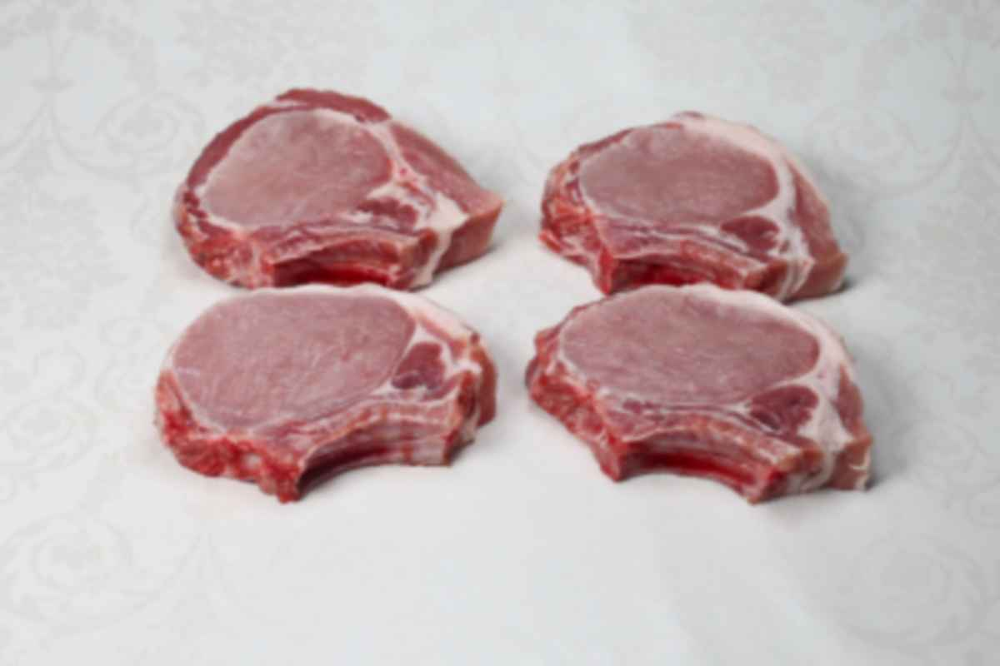

Calories in Meat > Calories in pork chop
Calories in pork chop
Due to its pale color, pork was considered white meat decades ago. However, the presence of large amounts of myoglobin definitely makes it red meat. Among all types of meat, pork has the highest vitamin B12 (thiamine) content. It also contains an ample amount of selenium and zinc, making it beneficial in boosting the immune system, fighting oxidative stress, and optimizing hormone production.
Nutritional Values per 100g:
- Calories – 262.4 kcal
- Protein – 17g
- Fat – 22g
- Cholesterol – 72 mg
Calories in pork chop are described in detail on the Calorie-Charts.info.
There are also: